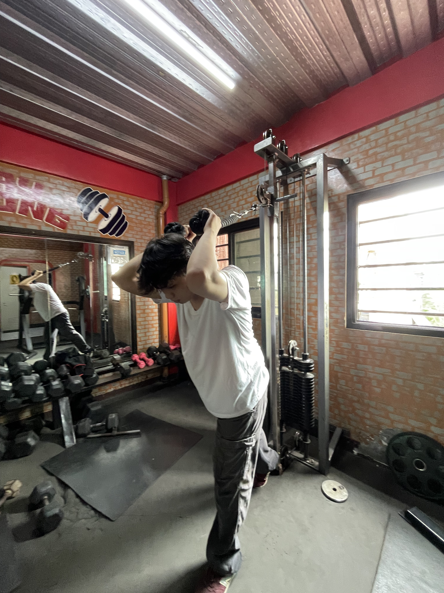
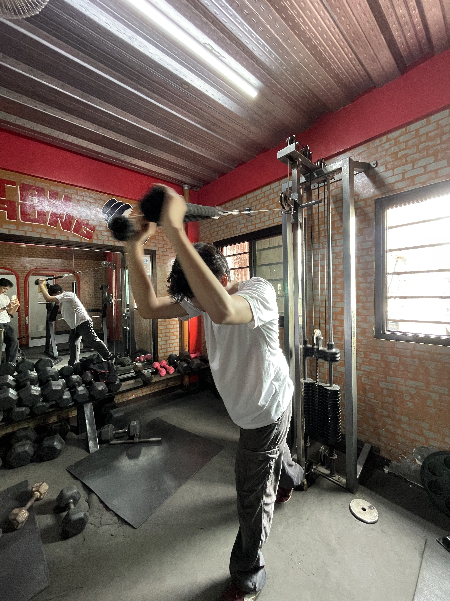
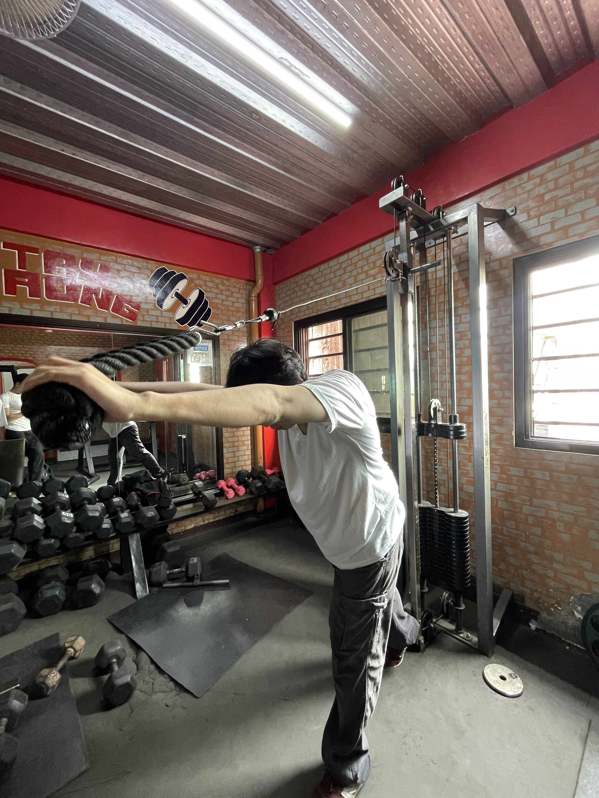
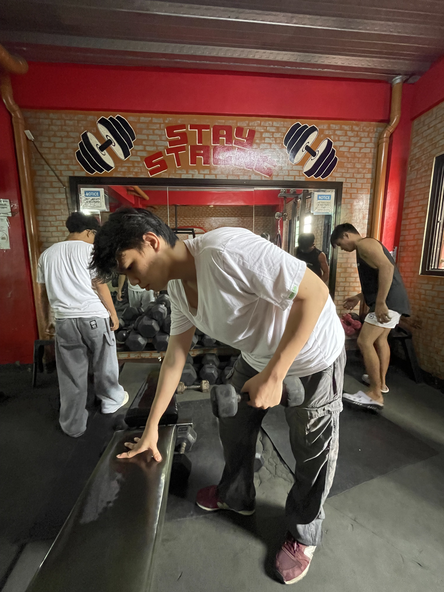
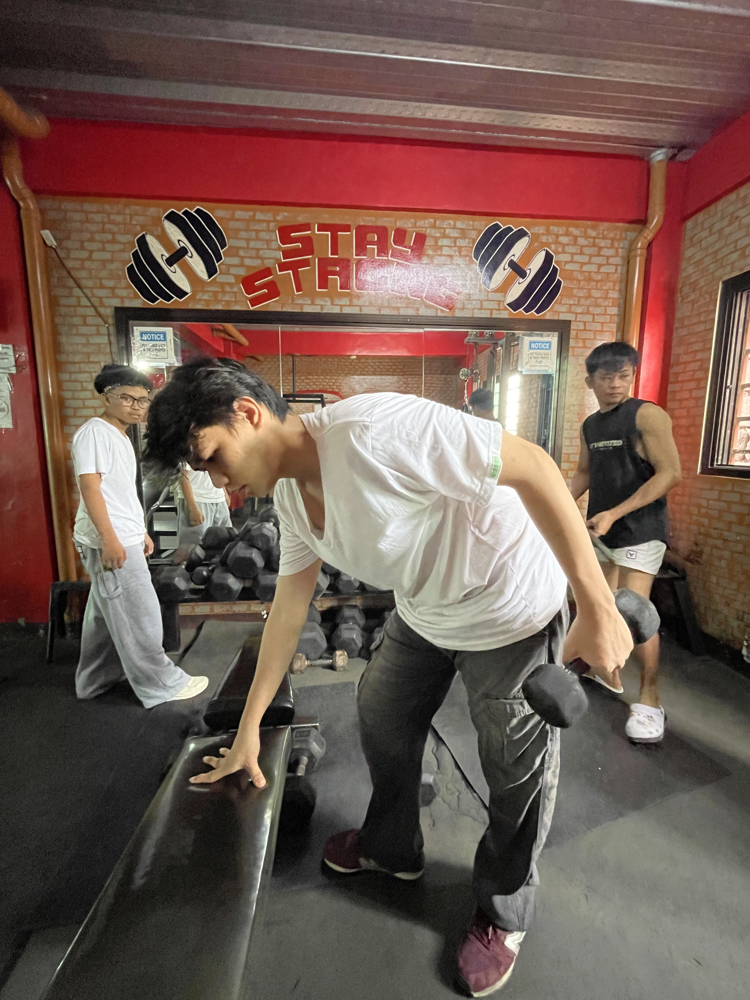
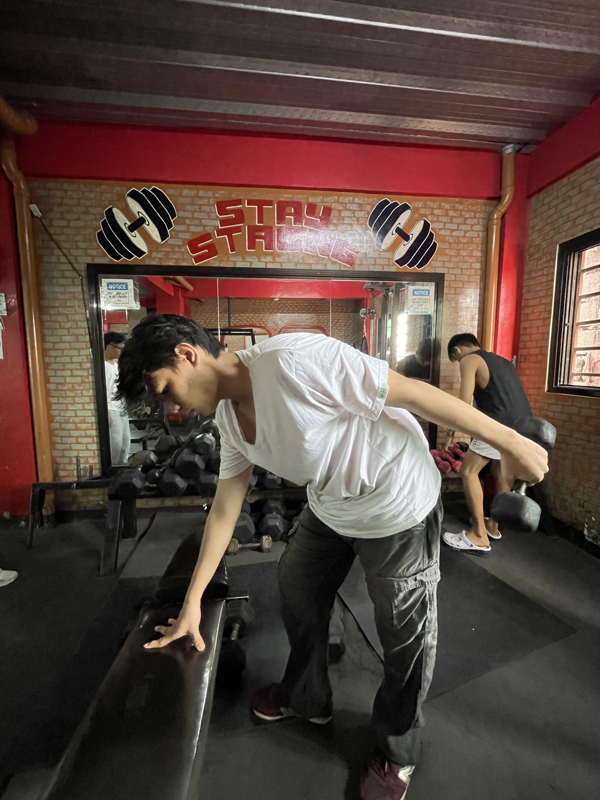
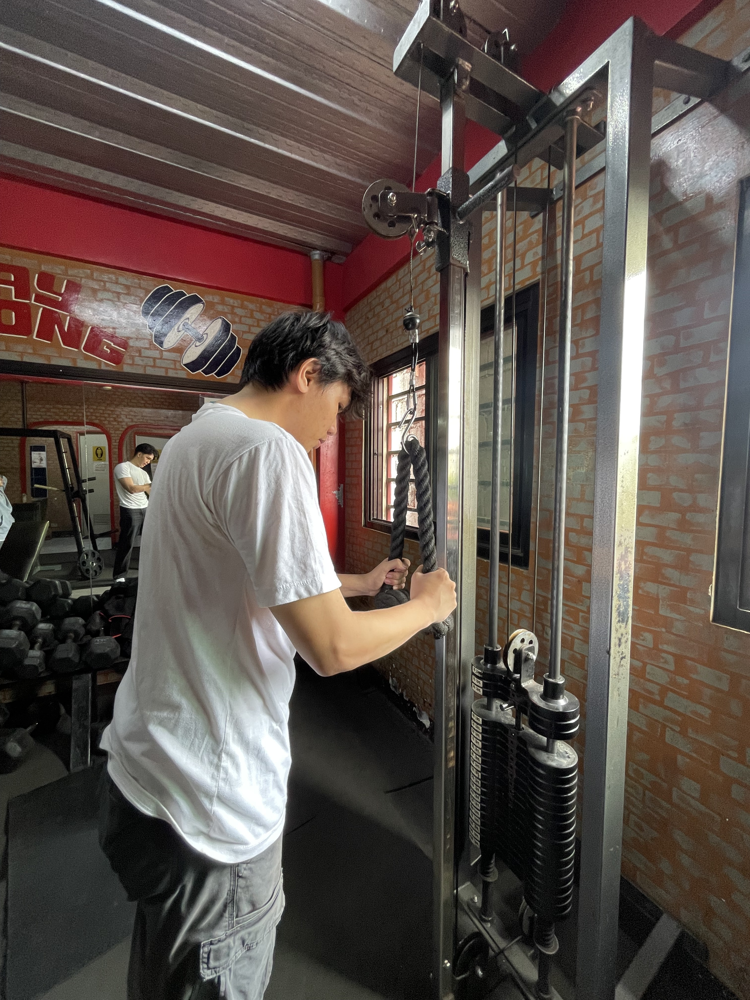
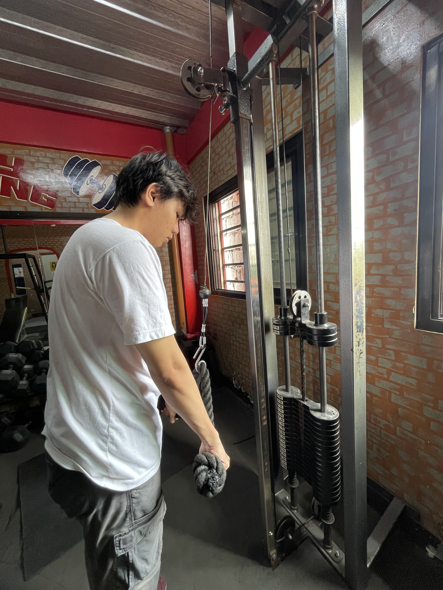
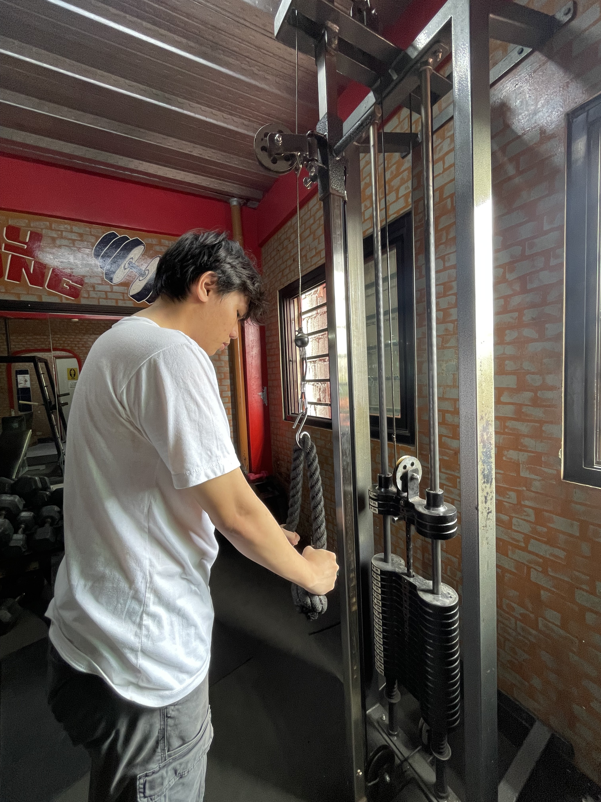

OVERHEAD



Overhead tricep exercises emphasize the long head of the triceps while the arms stay above the head. A controlled stretch and strong lockout help keep the triceps engaged.
TRICEP EXTENSION



Tricep extensions isolate the back of the upper arm by straightening the elbows against resistance. Keeping the elbows steady helps maintain focus on the triceps.
TRICEP PUSH



Tricep pushes build arm strength by pressing the handle downward until the elbows are extended. The controlled return helps train the triceps through the full movement.